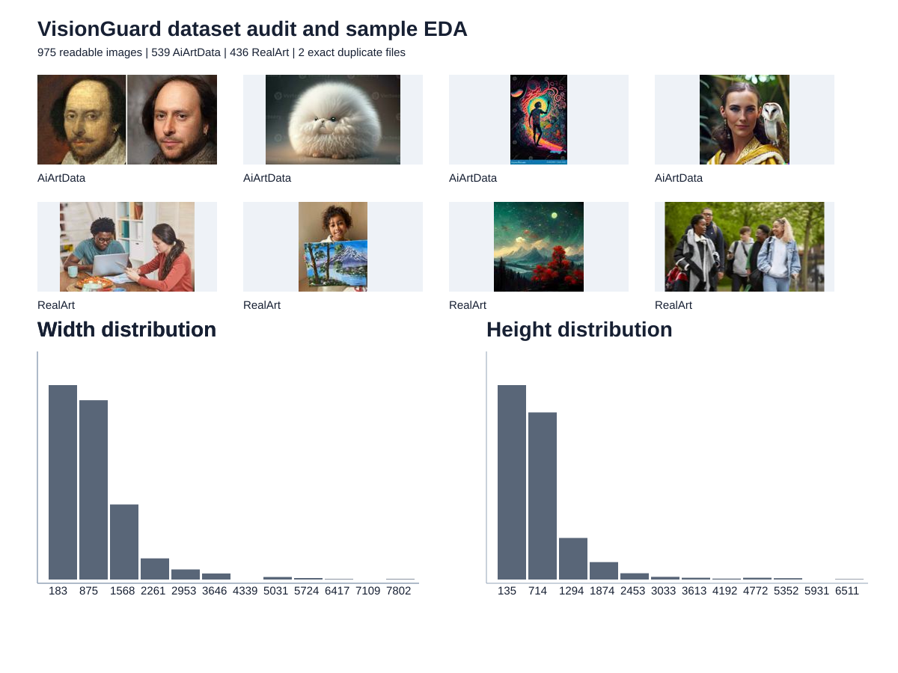
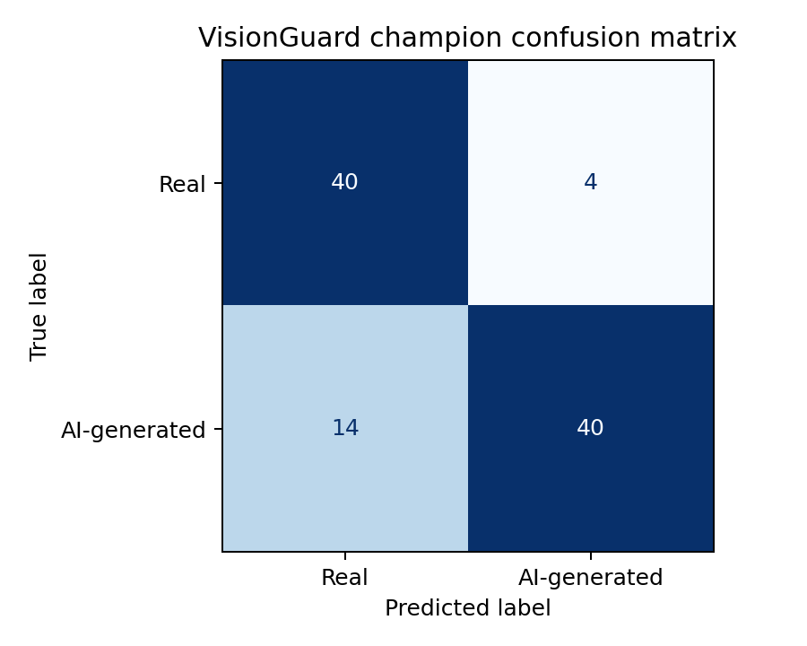
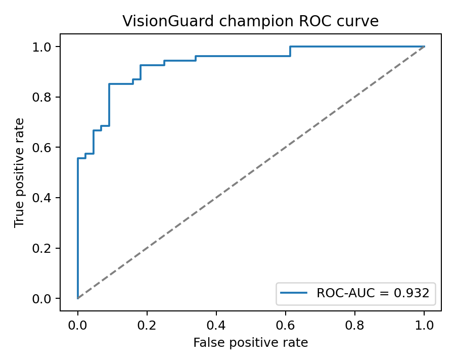
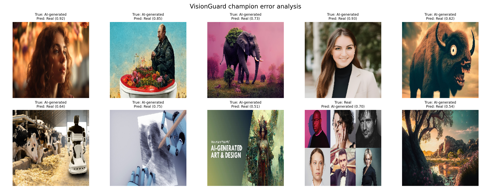
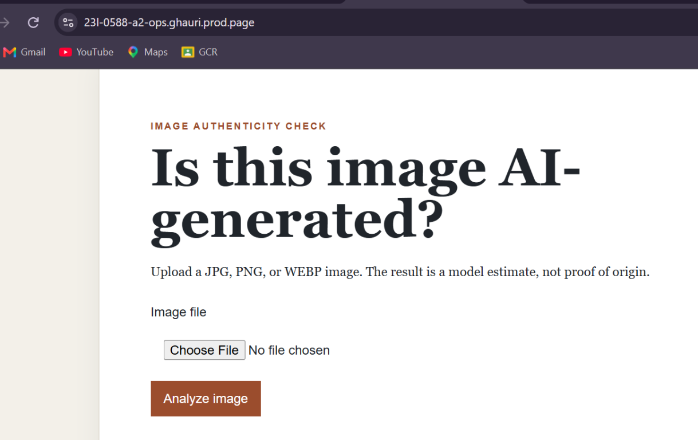
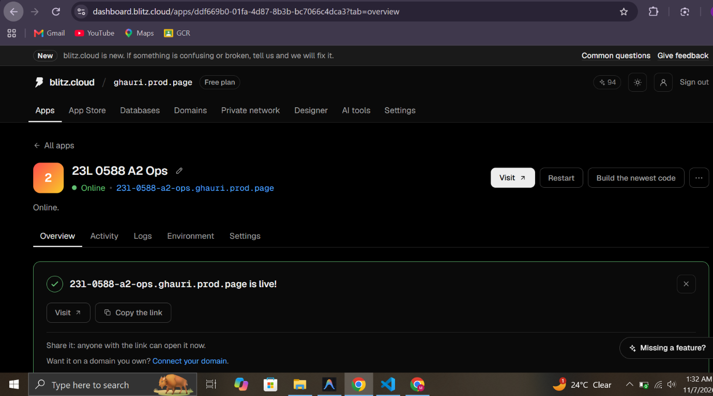

**Student:** Muhammad Abdul Raheem
**Project:** 23L-0588_A2_Ops
**GitHub:** https://github.com/abdul-raheem-fast/23L-0588_A2_Ops
**DagsHub:** https://dagshub.com/abdul-raheem-fast/23L-0588_A2_Ops
**Live URL:** https://23l-0588-a2-ops.ghauri.prod.page
**Graded commit:** bfbd52a
An AI assistant was used to help structure the implementation, identify reproducibility requirements, and review wording. All commands, runs, screenshots, account actions, metrics, and interpretations in this report must be produced and verified by the student.
Record the Python, TensorFlow, Keras, Pillow, MLflow, and Docker versions. Include the terminal screenshot showing the environment and GPU check.
The Colab runtime selected a T4 GPU. TensorFlow 2.18.0 was unavailable for that runtime, so the run used TensorFlow 2.21.0; this version change is recorded rather than hidden.
The audit script records class, file size, dimensions, colour mode, format, SHA-256, readability, and duplicate hashes. Include artifacts/audit/image_audit.csv, the summary table, and the screenshot of the command.
The Colab run audited 975 images: 539 from AiArtData, 436 from RealArt, no corrupt files, and two exact duplicate files.
The audited metadata was used to generate dataset_eda.svg. The sample grid shows the two source classes and the width/height distributions show substantial variation, including very large source images. The distributions describe the collected files rather than image semantics, so they should not be interpreted as proof that a visual feature is unique to either class.
The repository includes the DVC pipeline configuration in dvc.yaml and params.yaml. A separate authenticated DVC push/pull screenshot was not captured.
The tf.data pipeline reads the reproducible split CSVs, converts images to RGB, resizes them to 224×224, and batches them for training. The baseline CNN was compared with a MobileNetV2 transfer-learning head and a final fine-tuning run. Early stopping, checkpointing, and learning-rate reduction were used to limit overfitting.
The executed Colab run selected the fine-tuned MobileNetV2 model. Its recorded test metrics are in champion_metrics.json: accuracy 0.7449, precision 0.8718, recall 0.6296, F1 0.7312, and ROC-AUC 0.8695. The precision/recall difference indicates that the selected threshold favours fewer false AI-generated predictions at the cost of missed positives. The evidence notebook generated the confusion matrix, ROC plot, and error-analysis grid from the test predictions.
Evaluation artifacts: confusion matrix, ROC curve, error-analysis grid, and error-analysis CSV.
MLflow tracking was configured against DagsHub and the executed run recorded the baseline and MobileNetV2 experiments. The retained screenshots show the tracking configuration, completed runs, and final training output. The notebook did not export independent model-registry version and alias evidence, so those items are not represented as completed.
The model is loaded once during application startup. Upload validation checks the extension, size, and decoded image without persisting the upload. The result shows the label, confidence, and caveat; /history reads the request trail and /health reports service state.
Each successful prediction stores UTC time, sanitized filename, decision, confidence, model name, and model version. Include the schema and history-page screenshot.
The Docker image installs the serving dependencies separately from training/MLflow tools. It uses a slim CPU base, runs as a non-root user, downloads the public champion model when it is absent from the build context, and exposes port 8000. Compose defines the web/database services, health checks, readiness dependency, and named volumes. The first Blitz build failed because TensorFlow and MLflow imposed incompatible protobuf requirements; separating the manifests fixed the build.
The application was deployed from the GitHub main branch on Blitz Cloud using the repository Dockerfile. The deployment uses the public address https://23l-0588-a2-ops.ghauri.prod.page. The build initially failed because the training manifest combined TensorFlow 2.21.0 with MLflow 2.19.0, which require incompatible protobuf ranges. The production and training dependencies were separated, the updated image built successfully, and the public /health endpoint returned the deployed model name, version, and ok status. The free service may sleep when idle; no paid cloud credits were used.
The deployed Flask service accepts image uploads at /predict, renders the prediction result, and records successful requests for /history. A real dataset image was sent to the public endpoint and returned an AI-generated decision with 71.3% confidence. The health endpoint was also checked independently from outside the local workspace. The service uses SQLite for the free deployment because no managed database was provisioned; production deployments should use PostgreSQL and a secret-managed configuration.





